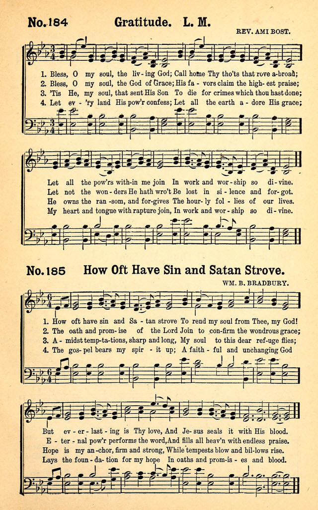

|
|
|
|
1 Father of all, Thy care we bless, 2 To God, most worthy to be praised, 3 To Thee may each united house 4 So may each future age proclaim Amen. |
580婚礼圣诗
1.今日聚焦，大家欢喜，
照主圣旨，恭行婚礼； 新郎新妇二人成一， 一家一体，一心一意。 2.自此一生，同走一路， 相敬、相信、相爱、相助； 天父时常保佑平安， 无有灾害，困苦、艰难。 3.恳求天父赐福临门，使他夫妇均沾鸿恩； 得感圣灵、敬爱救主，一世专心事奉天父。 4.但愿天父垂听祈祷，使他夫妇一双偕老； 快乐同享，苦难同当，终久二人长在天堂。 |
|
https://www.mred365.cn/szxg/7583.html
https://hymnary.org/hymn/BSHR1924/page/5 GRATITUDE

|
|
|
|
|
-

Father Of Men, Thy Care We Bless https://youtu.be/gKbGjFObVCQ -
| Text: | Father of All, Thy Care We Bless |
| Author: | Philip Doddridge |
| Short Name: | Philip Doddridge |
| Full Name: | Doddridge, Philip, 1702-1751 |
| Birth Year: | 1702 |
| Death Year: | 1751 |
Philip Doddridge

(b. London, England, 1702; d. Lisbon, Portugal, 1751) belonged to the Non-conformist Church (not associated with the Church of England). Its members were frequently the focus of discrimination. Offered an education by a rich patron to prepare him for ordination in the Church of England, Doddridge chose instead to remain in the Non-conformist Church. For twenty years he pastored a poor parish in Northampton, where he opened an academy for training Non-conformist ministers and taught most of the subjects himself. Doddridge suffered from tuberculosis, and when Lady Huntington, one of his patrons, offered to finance a trip to Lisbon for his health, he is reputed to have said, "I can as well go to heaven from Lisbon as from Northampton." He died in Lisbon soon after his arrival. Doddridge wrote some four hundred hymn texts, generally to accompany his sermons. These hymns were published posthumously in Hymns, Founded on Various Texts in the Holy Scriptures (1755); relatively few are still sung today.
Notes
Father of [man] men, Thy care we bless. P. Doddridge. [Family Worship.] Appeared in J. Orton's posthumous edition of Doddridge's Hymns, &c, 1755, No. 2, in 4 stanzas of 4 lines, and headed, "God's gracious approbation of a religious care of our families." In J. D. Humphreys's edition of the Hymns, printed from the original manuscript in 1839, a considerable difference is found in the hymns, showing that Orton took more than usual liberties with Doddridge's text. The first stanza reads:—
"Father of men, Thy care we trace,
That crowns with love our infant race;
From Thee they sprung, and by Thy power
Are still sustain'd through every hour."
The text followed by the compilers of hymn-books from Ash & Evans in their Bristol Baptist Collection, 1769, to the New Congregational Hymn Book, 1859-69, was that of Orton, 1755: often altered as in Ash & Evans's Collection to "Father of all, Thy care we bless." This latter is the more popular reading of the two. The Methodist New Connexion Hymns, &c, 1835-60, has it as "Father of man, Thy care we bless."
--John Julian, Dictionary of Hymnology (1907
Tune Information
| Tune: | GRATITUDE |
| Composer: | P. A. D. Bost, 1790-1874 |
| Title: | GRATITUDE (Bost) |
| Arranger: | Thomas Hastings (1837) |
| Composer: | Paul A. Bost |
| Meter: | 8.8.8.8 |
| Incipit: | 55133 53247 1 |
| Key: | E♭ Major |
| Copyright: | Public Domain |
| Short Name: | Ami Bost |
| Full Name: | Bost, Ami, 1790-1874 |
| Birth Year: | 1790 |
| Death Year: | 1874 |
Rev. Paul Ami Isaac David Bost,

was born on June 10, 1790 in Geneva, Switzerland. He sudied theology at the Moravian Institute at Neuwied and at the University of Geneva. He was an itinerant preacher in Switzerland, Germany and France. In 1825, he co-founded the Reformed Free Church of Geneva. From 1828-37 he worked as an evangelist in Carouge, After a brief pastorate at Asnires and Bourges in France, he was appointed chaplain of the prison of the Maison Centrale at Melun, where he remained until 1848, then lived in Geneva. He died on December 24, 1874 in Prigonrieux, Aquitaine, France.
© The Cyber Hymnal™ (hymntime.com/tch)